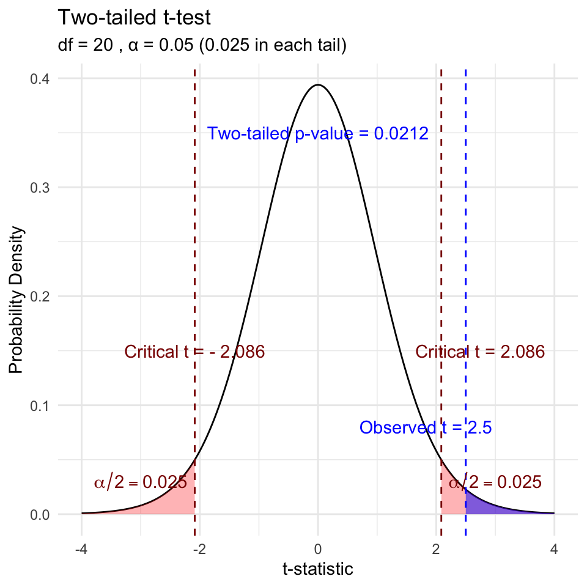

Lecture 06
Lecture 5: Review
Covered
- Statistical inference fundamentals
- Hypothesis testing principles
- T Distributions
- One sample T Tests
- Two sample T Tests
- Paired T Tests


Lecture 6: Statistical hypothesis testing
- Major goal of statistics:
- inferences about populations from samples…
- assign degree of confidence to inferences
- Statistical hypothesis testing:
- formalized approach to inference
- Hypotheses ask whether samples come from populations with certain properties
- Often interested in questions about population means
- but other questions are of interest
- inferences about populations from samples…

Lecture 6: Hypothesis Components
Useful hypotheses:
- Rely on specifying
- Ho is the hypothesis of “no effect”
two samples from population with same mean
sample is from population of mean = X
- Ha (research or alternate hypothesis)
- is the opposite of the Ho
- or predicts that there is an effect of x on y
- but does NOT suggest a direction which is a prediction
- Ho is the hypothesis of “no effect”

Lecture 6: Hypothesis Examples
Together Ho and Ha encompass all possible outcomes:
- Ho: µ=0, Ha: µ ≠ 0
- mean equals 0 or mean does not equal 0
- Ho: µ = 35, Ha: µ ≠ 35
- mean equals 35 or mean does not equal 35
- Ho: µ1 = µ2, Ha: µ1 ≠ µ2
- mean of population 1 equals mean of population 2 or it does not
- Ho: µ > 0, Ha: µ ≤ 0
can be directional mean is greater than 0 or mean is not equal or less than 0
this becomes a one sided test as it predicts only one direction
Lecture 6: Statistical Testing Framework
Statistical tests assess likelihood of the null hypothesis being true
- If the Ho is likely false, then Ha assumed to be correct
- More precisely:
- the long run probability of obtaining sample value (or more extreme one) if the null hypothesis is true
- p(data|Ho) - the probability of observing the data given that the null hypothesis Ho is true
- the long run probability of obtaining sample value (or more extreme one) if the null hypothesis is true
Lecture 6: Understanding P-values
Hypothesis tests
- Expressed as p-value (0-never to 1-always )
- Interpret p-value as:
- probability of obtaining sample value of statistic (or more extreme one) if Ho is true
- High p-value:
- high probability of obtaining sample statistic under Ho
- if the null hypothesis (Ho) were true, you would frequently observe data similar to your sample statistic
- your observed results are quite compatible with what the null hypothesis predicts
- high probability of obtaining sample statistic under Ho
- Low p-value: low probability of obtaining sample statistic under Ho
- if the null hypothesis (Ho) were true, you would rarely observe data similar to or more extreme than your sample statistic
- Your results are unusual under the null hypothesis, suggesting that either you’ve witnessed a rare event or the null hypothesis may be incorrect
Lecture 6: Historical Context

Decision errors
- Even good studies can reach incorrect conclusions
- “Decision errors”
- Two types of decision errors
- Want to know probability of making these errors

Type I and Type II Errors - Concept
- Type I error rate
- α: wrongly reject H₀ when it’s true
- α = 0.05 means a type I error rate of 5%
- Type II error rate, β
- wrongly fail to reject H₀ when it’s false
- Power = 1-β: probability of correctly rejecting H₀ when H₁ is true
- Inverse relationship between type I and type II error - but not straightforward
- Result of chance - sample not representative of population
- Which type of error is more dangerous?

the dotted line is the alpha = 0.05
Lecture 6: Type I and Type II Errors - Details
When making decisions based on hypothesis tests, two types of errors can occur:
Type I Error (False Positive)
- Rejecting H₀ when it’s actually true
- Probability = α (significance level)
- “Finding an effect that isn’t real”
Type II Error (False Negative)
- Failing to reject H₀ when it’s actually false
- Probability = β - “Missing an effect that is real”
Statistical Power = 1 - β
- Probability of correctly rejecting a false H₀
- Increases with:
- Larger sample size
- Larger effect size
- Lower variability
- Higher α level
The farther apart the means or lower variance the lower the beta error is ~ have higher power. - CLICK TO NEXT AS SAME TEXT